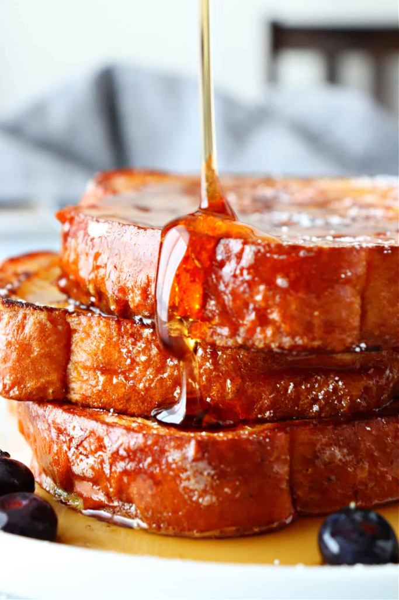

French Toast

The Secret to the Best French Toast?
This French Toast is crisp at the edges with a tender custard-like center. This is the perfect weekend breakfast and easy way to feed a crowd.
Try this method once and it will become your go-to base for French Toast. Sautéing in hot butter crisps up the edges and transferring the toasts to a hot oven is genius. It keeps the toasts warm for serving all at once, plus it sets the custard i center and you’ll even see them puff up in the oven. You’ll never worry about soggy toast again.
Recipe creditIngredients
- 6 large eggs
- 2 large egg yolks
- 1 cup whole milk
- 1/4 tsp salt
- 2 tsp vanilla extract
- 1 tsp ground cinnamon
- 1 tbsp warm honey
- 1lb bread such as challah, brioche, or texas toast
- 3 tbsp unsalted butter to saute toasts
Steps
- Slice your bread about 3/4" thick, and arrage on a wire rack for 1-2 hours if time permits to dry out the bread slightly. Preheat the oven to 275˚F.
- In a medium bowl, whisk together eggs, yolks, milk, salt, vanilla, cinnamon and warm honey until well blended and honey has dissolved. Pour into a casserole dish that fits 4 pieces of toast at a time, or as many as will fit your skillet at a time.
- Preheat your skillet over medium-low heat and melt in 2 Tbsp butter.
- Dip 4 pieces of bread into the egg mixture at a time and soak for 30-40 seconds per side depending on the thickness of the bread. Remove bread slices from egg wash letting excess drip back into the dish then place the bread slices into the hot skillet and sautee for 3-4 minutes per side until golden brown.
- Transfer to a baking sheet and place in the oven to keep warm at 275˚F. Repeat step 4 with remaining toasts, adding more butter as needed. Once all are sauteed, keep them in the oven for another 10-15 minutes for the custard center to fully set then serve warm with your favorite toppings.